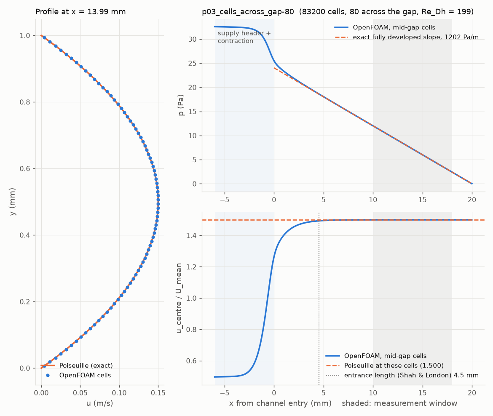
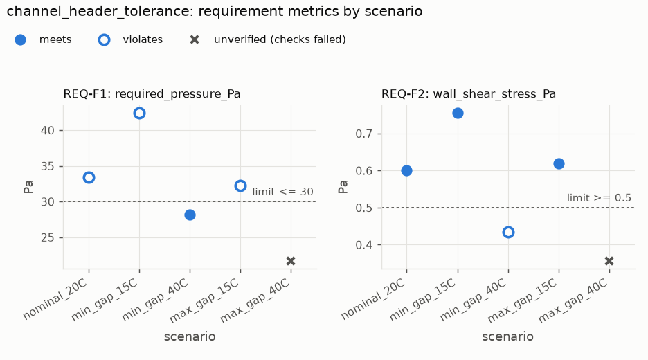

The question
A cold-plate passage is a 1 mm gap between two plates, 20 mm long, with water flowing at about 0.1 m/s. It gets a 30 Pa share of the pump's pressure budget, and it needs at least 0.5 Pa of shear on the walls to keep fouling down. Does it meet both if the gap can vary by ±0.05 mm and the coolant can be anywhere from 15 to 40 °C?
The answer
No. At nominal conditions it needs 33.4 Pa, 11 % over budget. Across the tolerance range it needs anywhere from 28 to 42 Pa, and with warm coolant the wall shear drops to 0.43 Pa.
The two requirements pull against each other. To stay inside the pressure budget with cold coolant, the gap has to be at least 1.078 mm. To keep enough wall shear with warm coolant, it can't be more than 0.885 mm. No gap does both. I predicted those two limits before running them, and the confirmation runs came back at 30.02 Pa and 0.500 Pa.
So the fix has to come from the design side. The options are a narrower coolant temperature range, a bigger pressure budget, a different flow split between channels, or a second look at the shear guideline.
Why it matters
A pump can only supply so much pressure, and every passage in a cooling circuit gets a share of it. A passage that needs more than its share starves the others of flow. At the same time the water has to move fast enough along the walls to stop deposits building up, and that sets a minimum wall shear. A narrow gap helps the shear and hurts the pressure; a wide gap does the opposite.
The useful result here is a failure. Showing that no gap size satisfies both requirements moves the problem from "tune the gap" to "change the requirements or the layout", which is a much cheaper thing to learn from a model than from a prototype.
The model
- Geometry
- A 3 mm high supply header, a smooth 3 mm contraction, then the channel: a 1 mm gap, 20 mm long. Modelled in 2D, as a slice through a wide passage.
- Fluid
- Water at 20 °C: density 998.2 kg/m³, viscosity 1.0016 mPa·s. Properties at 15 and 40 °C for the tolerance cases, from the IAPWS tables.
- Flow
- A fixed flow rate, set by the pump: 0.1 m/s mean velocity at the nominal gap. Reynolds number about 200, so the flow is laminar.
- Mesh
- 20 to 80 cells across the gap. The tolerance cases use 80.
- Analysis
- Steady, incompressible, laminar flow in OpenFOAM 14.
- What's measured
- The supply pressure needed, counting the kinetic energy of the flow at the exit as lost, and the wall shear where the flow has settled.
- Tolerance cases
- The four corners of gap (0.95 and 1.05 mm) and coolant temperature (15 and 40 °C), plus nominal.
The case file: recorded assumptions, limits and inputs
This is the study's own record, written before the run and saved with it, in the shorthand of the case file.
cases/channel_header_tolerance.toml ↗
Header-fed 1 mm parallel-plate channel (as channel_header_mesh, 80 cells across the gap) evaluated at the corners of the gap tolerance (0.95-1.05 mm) and coolant temperature range (15-40 C) at a fixed flow rate of 1.0e-4 m^2/s per unit width. Finds whether the pressure budget and minimum wall shear hold across the tolerance band.
Assumptions, and how each is checked
- As channel_header_mesh, except the inputs varied below.
- Flow rate per unit width is fixed by the pump: mean velocity = 1.0e-4 / gap (m/s, gap in m).
- Water properties from IAPWS tables: 15 C (999.10 kg/m^3, 1.1375 mPa s), 20 C (998.21, 1.0016), 40 C (992.22, 0.6527).
- Gap is uniform along the channel within each scenario (no taper or waviness).
Limits
- Synthetic tolerance band and temperature range; not from a drawing or a thermal analysis.
- Corners only: no statistical (e.g. Monte Carlo) combination of tolerances.
- Numerical uncertainty is taken from channel_header_mesh (same mesh resolution).
- No physical test data.
Inputs
| Input | Value |
|---|---|
| gap_mm | 1 |
| length_mm | 20 |
| mean_velocity_m_per_s | 0.1 |
| density_kg_per_m3 | 998.21 |
| dynamic_viscosity_Pa_s | 0.0010016 |
| cells_across_gap | 80 |
| cell_aspect_ratio | 2 |
| window_start_mm | 10 |
| window_end_mm | 18 |
| supply_height_mm | 3 |
| supply_length_mm | 3 |
| contraction_length_mm | 3 |
Fully developed laminar water flow (20 C, 0.1 m/s mean) in a 1 mm x 20 mm rectangular duct, i.e. the coolant channel with its side walls. 3D OpenFOAM on a periodic quarter cross-section; mesh refined from 10 to 80 cells across the gap (ratio 2). Quantifies the error of the 2D parallel-plate assumption.
Assumptions, and how each is checked
- Channel width 20 mm (synthetic; the real width is not specified). The side-wall effect scales roughly with gap / width.
- Fully developed flow (periodic in x): entrance effects are covered by the 2D header model.
- Incompressible, isothermal, Newtonian water at 20 C (IAPWS: rho = 998.21 kg/m^3, mu = 1.0016 mPa s); laminar.
- Symmetric about mid-gap and mid-width (quarter section modelled).
Limits
- One width only; other widths follow from the verified exact series solution.
- Corner regions of a real channel (fillets, side-wall roughness) are not modelled.
- No physical test data.
Inputs
| Input | Value |
|---|---|
| gap_mm | 1 |
| width_mm | 20 |
| mean_velocity_m_per_s | 0.1 |
| density_kg_per_m3 | 998.21 |
| dynamic_viscosity_Pa_s | 0.0010016 |
| cells_across_gap | 20 |
| width_cells_per_gap_cell | 2 |
| side_wall_grading | 10 |
How it works
The model includes the supply header and a smooth contraction into the channel, not just the channel. That matters: the flow speeds up as it enters, and the pressure that takes is part of the budget. I count the flow's kinetic energy at the exit as lost, which is the usual cautious assumption. That exit loss is 7.7 Pa of the 33.4.


How I checked it
- Against the exact solution. Once the flow has settled, the velocity profile, pressure gradient and wall shear match the textbook solution for flow between parallel plates within 0.02 %.
- Conservation. Mass is conserved to about one part in a hundred million, and wall friction balances the pressure force within a few parts in a hundred thousand.
- Mesh refinement. Going from 20 to 80 cells across the gap converges at exactly the expected rate, leaving 0.04 % mesh uncertainty.
- A hand calculation. Lubrication theory for the header and the Shah and London correlation for the developing flow in the channel agree with the model within 0.3 % in every case.
- The 2D assumption. A separate 3D model includes the side walls of a 20 mm wide channel. The side walls add 3.2 % friction, and the exact rectangular-duct solution says 3.25 %. That's about 0.8 Pa more, which only makes it a clearer fail.
Where the uncertainty comes from
| Source of uncertainty | How big it is |
|---|---|
| The mesh | 0.04 % |
| Iteration and conservation | Negligible, well under one part in ten thousand |
| Simplifications in the model | 0.3 % or less against the hand calculation, plus about 3 % from the side walls |
| Manufacturing tolerance and coolant temperature | 16 % below to 27 % above nominal. This outweighs everything else. |


What I caught along the way
- A simplified inlet that flipped the answer. My first model pushed a perfectly uniform flow straight into the channel, which is a common shortcut, and it said the channel passed at 28.6 Pa. But the pressure kept creeping up as I refined the mesh and never settled, which usually means there's a sharp corner the solver can't resolve. The mesh check failed, so that answer was never reported as verified. Adding the supply header fixed it, and once I counted the exit loss the answer went from a pass to a fail.
- A case that wasn't settled. With warm water and the widest gap, the flow was still developing slightly where I take the measurements. That case is marked unverified, and the conclusion stands on the other four.
- An average that hid a local error. My first 3D mesh was coarsest right where it needed to be finest, next to the side walls. The overall friction still looked fine, but comparing the whole velocity field point by point failed every time, always next to the wall. Averages can hide local errors, so I compare the full field too.
Limits, and what I'd do next
- The flow is laminar and at one temperature throughout. Heat transfer isn't modelled here; studies 11 and 15 add it.
- The 20 mm channel width used for the 3D check is assumed. The side-wall effect grows roughly with gap over width.
- Only the corners of the tolerance range are run. A statistical combination of tolerances would say how often the worst case happens.
- The pressure budget and the shear guideline are made up for the study, and there's no test data.
Evidence
Run reports, with every check and the saved inputs